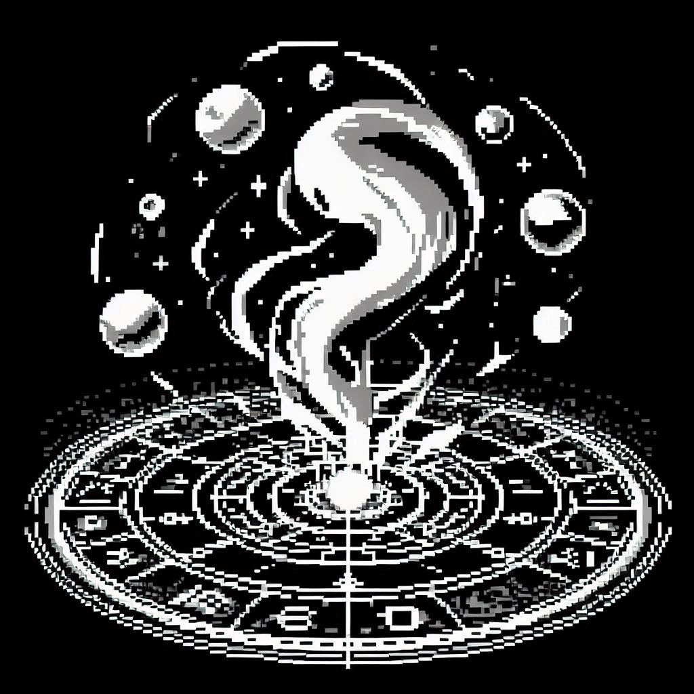

소환사는 정신을 통로로 삼아 주문 세계의 생물인 "정령"을 현실에 불러오는 초상 능력의 사용자이다.
주문 세계의 특징인 비물질성과 불확실성으로 인해, 소환된 정령의 역량과 형질은 소환사의 정신과 관점에 크게 영향을 받으며, 이는 그들 사이에서 "세계관"이라는 용어로 불린다.
세계관의 형태는 문화권과 소환사 개개의 적성에 따라 크게 달라지지만, 일정 수준 이상 세계관의 공통성을 띄고 세력화된 소환사의 하위 분류는 샤먼과 악마숭배자, 군단과 백치가 존재한다.
샤먼Shaman은 전통 무속의 신령과 그 교류자인 주술사의 개념을 빌려온 세계관을 가지며, 신령의 형태는 자연물 또는 동물의 형태를 띈다.
악마숭배자Satanist는 정령을 주류 종교에서 악마로 불리우는 존재로 규정하며, 주문 세계를 숭배하며 그들의 특징적인 교리에 따라 정령을 다룬다.
군단Legionary은 정령에 대해 신앙이 배제된 보다 건조한 입장을 취하는 소환사를 일컬으며, 이들의 정령은 정형화된 형태를 띄고 때로는 현실 세계의 대응물과 닮은 모습을 보이기도 한다.
백치Imbecile는 주문 세계의 형태 그대로 정령을 그려내려는 시도를 보이는 소환사이며, 이들이 소환하는 정령은 일반적 상식에서 크게 벗어나는 외형을 띄거나 비합리적이고 모순적인 능력을 보인다.
@n33dforheight: 개 씨발 사이코 새끼들;; 지네가 뭘 다루는 건지도 정확히 모르면서 눈 감고 숭배하는 꼬라지란. 웬만하면 가까이 하기 싫어.
L @rep0scum_mustdie: 그래도 효과는 확실하지 않냐? 완전 얼치기라도 지 대신 소환체가 싸워 주니까 평균은 보장되잖아.